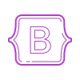

.png)

welcome to my profile
Through innovative projects, hands-on experience,
and a passion for technology
share my journey
as a full-stack developer engineer.
Hi, I'm Nourhene, web developer passionate
about crafting seamless and engaging digital experiences.
With expertise in combining cutting-edge technologies with thoughtful design,
I specialize in building dynamic websites and interactive web applications.
Whether you need a responsive website or a custom solution,
I’m here to help bring your vision to life.
Hi, I’m nourhene amdouni, a 21-year-old passionate software developer. My journey in tech has been anything but traditional. I didn’t complete high school, but I never let that stop me from pursuing my passion for technology. I hold a certificate in Computing Management, which gave me a solid foundation in tech. Recently, I completed a software development bootcamp at Coding Dojo, where I honed my skills as a full-stack developer. During the bootcamp, I discovered my love for building web applications and solving complex problems using modern development technologies. Now, I’m ready to take on the world of software development, eager to contribute to innovative projects.
- Communication
- Teamwork
- Problem-solving
- Adaptability
- Time management
- Critical thinking
- bootstrap
 Css
Css- Html
- Reactjs
- Jimja2
 Mysql
Mysql MongoDB
MongoDB
 Flask
Flask Expressge
Expressge
 Python
Python Java
Java Node JS
Node JS C#
C#
 github
github- Vscode
 Git
Git- Postman

DojoWeather is a simple, user-friendly web application designed to display weather
forecasts
for
multiple cities.
The interface provides daily updates on temperature and weather conditions, such as
rain,
clouds, and sun,
making it easy for users to plan their days. Built using modern web technologies, this
app
allows users to switch between
different cities and view temperature readings in Celsius or Fahrenheit
The feed features posts from different users, each accompanied by a "like" button that
increments the number of likes by one when clicked.
The interface presents three user posts:
Neil M, Nichole K, and Jim R, each with varying like counts.
Neil M discusses setting up a new
Discord bot, Nichole K shares a new comic,
and Jim R expresses excitement about a
new
album.
Asmall instructional note highlights the functionality of the like button, enhancing
user
interaction.
Additionally, there is a section on the left where users can add or update their
avatar.
The layout emphasizes simplicity and ease of use, providing a
straightforward way for users to engage with the content.

The Profile Page Web Application is a user-centric project I developed to allow
individuals
to
create, manage,
and view their personal profiles in a social-style dashboard. The app also
facilitates social connections,
giving users the ability to manage connection requests and view their network.
.png)